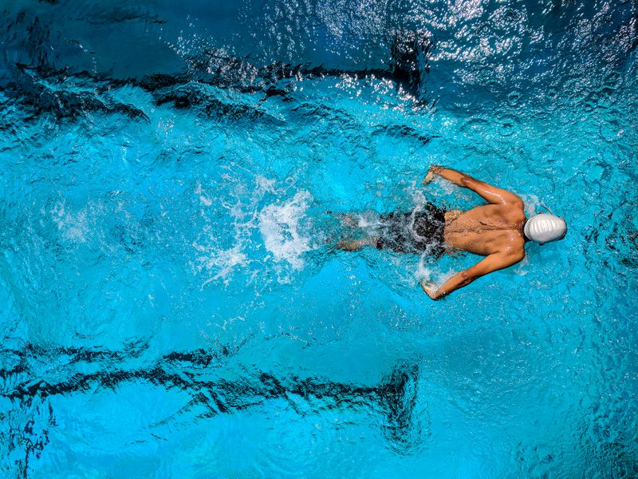

Membiasakan Nalar Kritis Melalui Eksplorasi Nyata.
Pendekatan terpadu STEAM di Sedaya Bintang memadukan Kurikulum Nasional dan kurikulum internasional Pearson Edexcel iPrimary untuk membekali si kecil dengan keterampilan mengamati, menganalisis, dan mencari solusi terstruktur.

5 Unsur Pembelajaran Terpadu
Kelima elemen saling melengkapi dalam bentuk proyek tematik terarah, sehingga si kecil terbiasa menghubungkan teori sains dengan penerapan kontekstual di keseharian.
Science (Sains)
Inkuiri AlamMembiasakan si kecil mengamati gejala alam, merumuskan rasa penasaran, serta melakukan pembuktian sederhana melalui eksperimen langsung yang aman dan menyenangkan.
Technology (Teknologi)
Literasi DigitalPengenalan perangkat digital secara bijak dan beretika. Teknologi difungsikan sebagai alat bantu pencarian data, pemrosesan logika, dan media ekspresi karya.
Engineering (Rekayasa)
Melatih si kecil merancang tahapan solusi, menyusun struktur bangun sederhana, dan melakukan perbaikan saat menjumpai kendala teknis.
Arts (Seni & Kreativitas)
Menyeimbangkan logika eksak dengan kepekaan estetika, imajinasi visual, dan keberanian mengekspresikan gagasan secara orisinal.
Mathematics (Matematika)
Mengadopsi Framework Matematika Singapura oleh Dr. Yeap Ban Har dengan alur konkret ke abstrak (CPA) untuk nalar angka yang kokoh.
Fasilitas Pendukung Eksplorasi
Setiap sudut sekolah dirancang untuk memfasilitasi rasa ingin tahu, pengamatan aktif, dan kebugaran jasmani si kecil dalam lingkungan yang bersih dan aman.

SPACELAB Interaktif
Ruang stimulasi visual dan eksperimen sains antariksa untuk menumbuhkan imajinasi serta pemahaman astronomi dasar si kecil.

Metode Learning Corners
Penataan sudut kegiatan tematik dengan alat peraga Montessori untuk melatih inisiatif dan fokus mandiri anak usia dini.

Roof Garden & Botani
Area hijau terbuka di mana murid merawat tanaman dan mempelajari siklus fotosintesis serta keanekaragaman flora secara langsung.

Laboratorium Komputer
Fasilitas literasi komputasi yang terintegrasi dengan Pearson Edexcel Computing, mengajarkan logika pemecahan masalah sejak sekolah dasar.

Kolam Renang & Area Gerak
Membina kebugaran fisik, koordinasi motorik kasar, serta rasa percaya diri di air dengan pendampingan pelatih dan pengawasan ketat.
Tujuan Kompetensi 4C
Kami tidak sekadar mengukur hafalan rumus, melainkan membentuk kebiasaan berpikir runtut yang menjadi bekal kemandirian si kecil seumur hidup.
Critical Thinking
Kemampuan menelaah data, mempertanyakan sebab-akibat, dan mengambil keputusan rasional berdasarkan fakta terverifikasi.
Creativity
Daya cipta untuk memikirkan sudut pandang baru dan menghadirkan solusi orisinal saat menghadapi keterbatasan sarana.
Collaboration
Kecakapan berbagi tanggung jawab, berempati, serta menghargai kontribusi teman dalam menyelesaikan misi kelompok.
Communication
Keterampilan mengartikulasikan alur pikir secara santun, terstruktur, dan percaya diri dalam lingkungan multibahasa.
Latih Nalar & Logika di Sedaya Games Hub
Kami merancang mini game edukatif interaktif untuk menguji pemahaman konsep sains, aksara Mandarin, kosakata, dan nalar spasial. Ramah anak, tanpa iklan komersial, dan dapat dimainkan langsung di peramban.
Koleksi Game Edukasi di Portal:
STEAM Astro Logic
Tantangan memecahkan teka-teki logika rotasi aliran energi dan ruang spasial 3D. Melatih kesabaran, nalar analitis, dan daya prediksi si kecil.
Sinergi Pilar ACT: Thinking, Attitude & Compassion
Kapasitas nalar (Thinking) si kecil akan berbuah optimal ketika dibarengi dengan etika luhur (Attitude) dan empati sosial dalam pergaulan antarbangsa (Compassion).